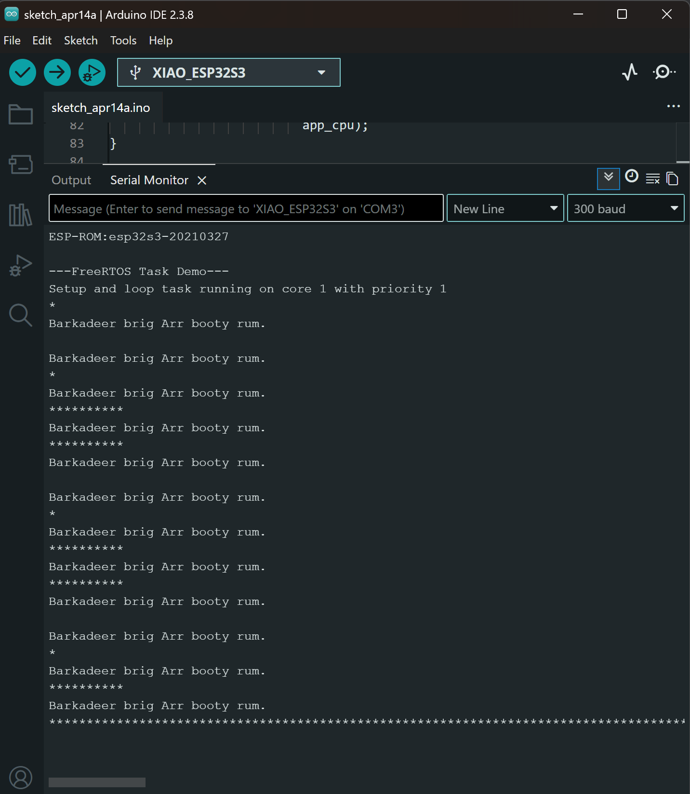
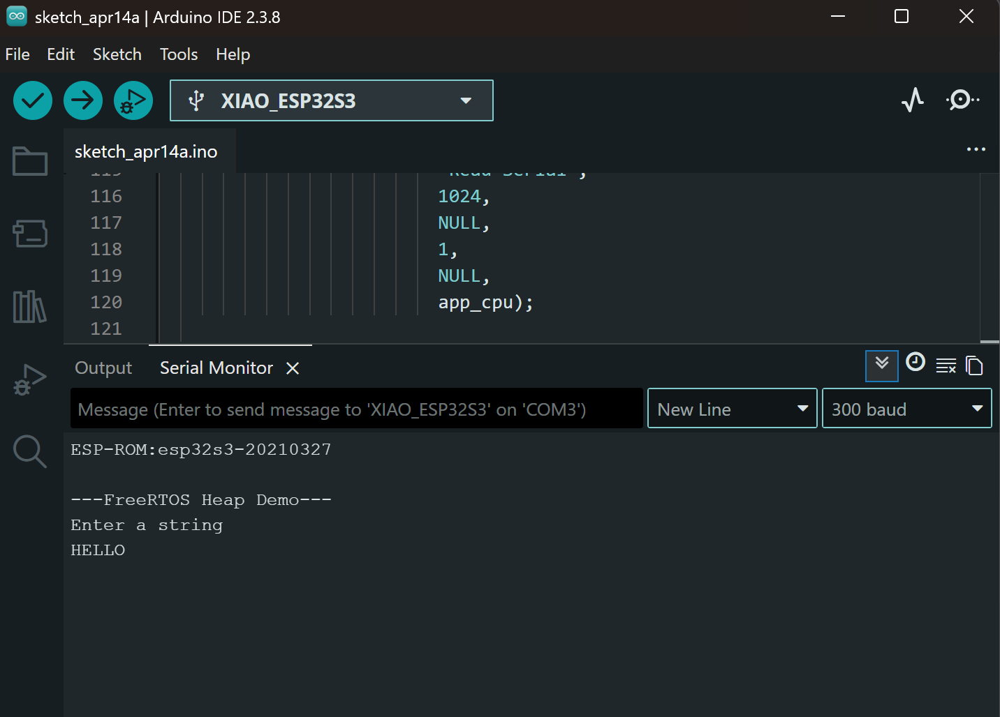
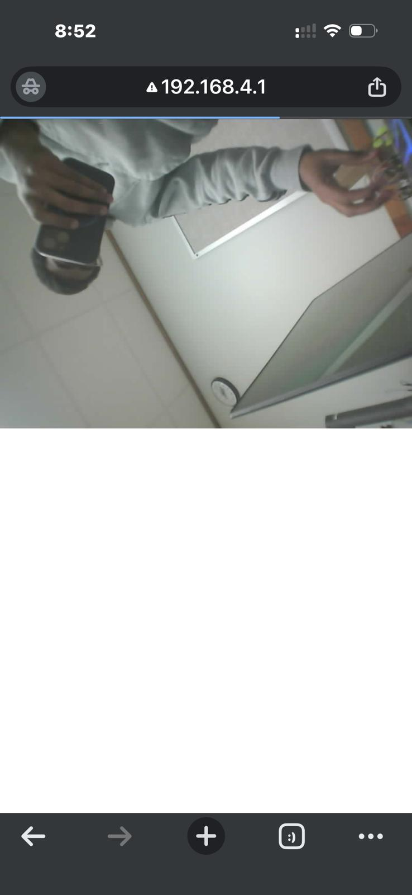

This lab introduces FreeRTOS concepts on the ESP32, including task creation, scheduling, synchronization, queues, mutexes, multicore execution, and WiFi-based camera streaming.
In this part, I ran FreeRTOS task examples on the ESP32. The first demo blinked the onboard LED using a separate task with a 500 ms delay. The second demo created two independent LED tasks blinking at 500 ms and 323 ms, showing how multiple tasks can run concurrently and affect the same hardware resource.
This part demonstrated FreeRTOS task scheduling and task interaction. One example showed task priority, suspension, resumption, and deletion. Another example showed one task blinking an LED while another task read delay values from the Serial Monitor and updated the blink rate in real time.

Part 2 task scheduling output
In this part, I observed how FreeRTOS tasks use dynamic memory. One task read input from the Serial Monitor, allocated heap memory for the message, and another task printed the message and freed the memory. This demonstrated inter-task communication and safe heap usage.

Part 3 heap and message output
This part demonstrated queue-based communication between tasks. The main loop continuously sent incrementing numbers into a FreeRTOS queue, and a separate task received and printed those values through the Serial Monitor. This showed a safer method of communication than directly sharing variables.
This part demonstrated race conditions and mutex protection. First, two tasks incremented the same shared variable without synchronization, which caused inconsistent results. Then a mutex was added so only one task could access the shared variable at a time. Finally, a mutex was used to safely pass a stack-based parameter to a task.
This part demonstrated multicore execution on the ESP32. One program showed two FreeRTOS tasks running across available cores while printing their task name and core ID. Another program pinned two LED blinking tasks to different cores, showing how the ESP32 can manage concurrent work on Core 0 and Core 1.
In this final part, the ESP32 camera was configured as a WiFi access point and used to stream live video through a browser. The device also saved captured images to the SD card. This part demonstrated WiFi setup, camera initialization, HTTP streaming, and real-time image handling.

Part 7 WiFi camera stream output